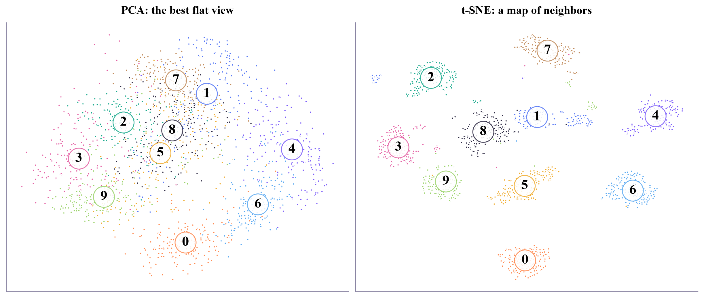
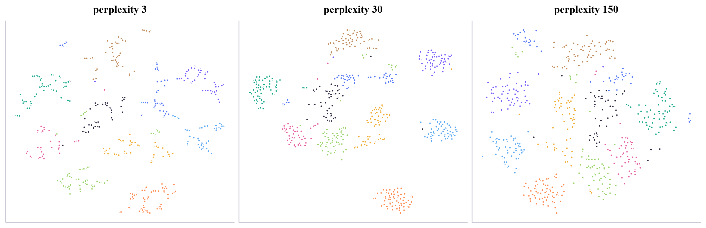
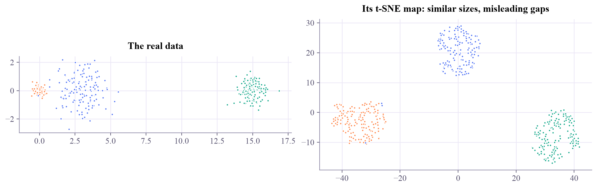
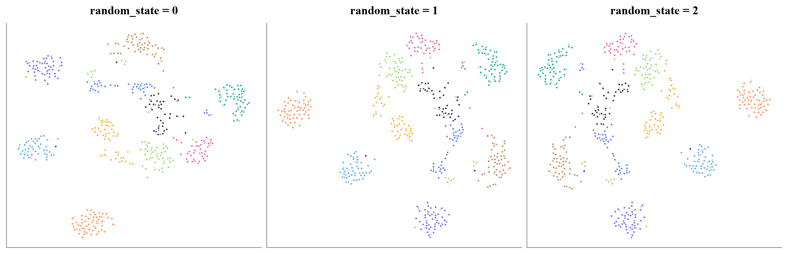

t-SNE of 1797 digits took 5.2 s

PCA gives the best flat view of a data cloud. t-SNE draws a map instead: it keeps every point next to its true neighbors, and turns 64-dimensional digits into islands you can see.

A world map flattens a round planet: it must distort something, and different maps choose different things to keep. Data with 64 dimensions is much harder to flatten than a globe. In week 6, PCA chose to keep the directions with the most spread. Today's method chooses to keep the neighborhoods.
t-SNE (t-distributed stochastic neighbor embedding, van der Maaten and Hinton, 2008) works in two steps.
Each step pulls true neighbors together and pushes everyone else apart a little, so points that belong together gather into islands. The heavy tail gives the islands room, which is why t-SNE maps look so clean.
What it keeps: who is near whom. What it doesn't keep, and what people often misread:
t-SNE is for looking, not for features: there's no formula to place a new point, and it's slow for very large data. UMAP (2018) is a faster cousin with the same idea and the same warnings.
t-SNE draws a map where neighbors stay neighbors: great for spotting groups, but island sizes, gaps and axes mean little.
400 handwritten digits, 40 of each, run live in your browser. The dots start squeezed together in the middle and spread out into islands. Hover a dot to see which image it is; colors are the true digits, which t-SNE never sees.
After the map settles, press New random start: do the same digits form islands again, in new places? Try perplexity 3 (many little clumps) and 80 (rounder, more crowded). Then show the PCA view: which digits does PCA mix up that t-SNE keeps apart? Hover the dots that sit on the wrong island: are they odd-looking digits?
ml-w8d4.ipynb. To change the code and run it yourself, open the notebook in Google Colab (free, in your browser) or download it for your own Jupyter.import time
import numpy as np
import matplotlib.pyplot as plt
from sklearn.datasets import load_digits
from sklearn.decomposition import PCA
from sklearn.manifold import TSNE
digits = load_digits()
X = digits.data / 16.0
y = digits.target
colors = np.array(["#ff8a50", "#5577f5", "#17a98c", "#e45fa3", "#7b5cfa", "#f0ac2e", "#5aa9f2", "#c08a5a", "#2c2842", "#9bd36b"])
t0 = time.perf_counter()
emb = TSNE(n_components=2, perplexity=30, random_state=0).fit_transform(X)
print(f"t-SNE of {len(X)} digits took {time.perf_counter() - t0:.1f} s")
pcs = PCA(n_components=2).fit_transform(X)
fig, axes = plt.subplots(1, 2, figsize=(11, 4.6), layout="constrained")
for ax, Z, title in [(axes[0], pcs, "PCA: the best flat view"), (axes[1], emb, "t-SNE: a map of neighbors")]:
ax.scatter(Z[:, 0], Z[:, 1], c=colors[y], s=6)
for d in range(10): # write each digit at the middle of its points
cx, cy = np.median(Z[y == d], axis=0)
ax.text(cx, cy, str(d), fontsize=16, weight="bold", ha="center", va="center",
bbox=dict(boxstyle="circle", fc="white", ec=colors[d], alpha=0.85))
ax.set_title(title)
ax.set_xticks([])
ax.set_yticks([])
plt.show()t-SNE of 1797 digits took 5.2 s

sub = np.random.default_rng(0).choice(len(X), 600, replace=False)
fig, axes = plt.subplots(1, 3, figsize=(12, 3.8), layout="constrained")
for ax, perp in zip(axes, [3, 30, 150]):
Z = TSNE(perplexity=perp, random_state=0).fit_transform(X[sub])
ax.scatter(Z[:, 0], Z[:, 1], c=colors[y[sub]], s=8)
ax.set_title(f"perplexity {perp}")
ax.set_xticks([])
ax.set_yticks([])
plt.show()
rng = np.random.default_rng(1)
A = rng.normal([0, 0], 0.2, (150, 2)) # tight
B = rng.normal([3, 0], 1.0, (150, 2)) # wide
Cc = rng.normal([15, 0], 0.5, (150, 2)) # far away
G = np.vstack([A, B, Cc])
lab = np.repeat([0, 1, 2], 150)
Z = TSNE(perplexity=30, random_state=0).fit_transform(G)
fig, (ax1, ax2) = plt.subplots(1, 2, figsize=(11, 3.4), layout="constrained")
ax1.scatter(G[:, 0], G[:, 1], c=colors[lab], s=8)
ax1.set_title("The real data")
ax1.set_aspect("equal")
ax2.scatter(Z[:, 0], Z[:, 1], c=colors[lab], s=8)
ax2.set_title("Its t-SNE map: similar sizes, misleading gaps")
plt.show()
In the real data, the green group is five times farther away than the other two are from each other, and the orange one is five times tighter than the blue. On the map, all three are about the same size, about the same distance apart.
Draw three maps of the same 600 digits from three random starts. What stays, what changes?
fig, axes = plt.subplots(1, 3, figsize=(12, 3.8), layout="constrained")
for ax, seed in zip(axes, [0, 1, 2]):
Z = None # TODO: TSNE(perplexity=30, init="random", random_state=seed).fit_transform(X[sub])
# TODO: scatter Z colored by colors[y[sub]], and title the plot with the seed
plt.show()Inside the loop: Z = TSNE(perplexity=30, init="random", random_state=seed).fit_transform(X[sub]), then ax.scatter(Z[:, 0], Z[:, 1], c=colors[y[sub]], s=8) and ax.set_title(...).
fig, axes = plt.subplots(1, 3, figsize=(12, 3.8), layout="constrained")
for ax, seed in zip(axes, [0, 1, 2]):
Z = TSNE(perplexity=30, init="random", random_state=seed).fit_transform(X[sub])
ax.scatter(Z[:, 0], Z[:, 1], c=colors[y[sub]], s=8)
ax.set_title(f"random_state = {seed}")
ax.set_xticks([])
ax.set_yticks([])
plt.show()
print("The islands (which digits clump together) stay; where they sit, and which way up, changes.")
The islands (which digits clump together) stay; where they sit, and which way up, changes.
QML papers often show t-SNE or UMAP maps of the states their circuits produce, to argue that a quantum feature map "separates the classes". Now you know to ask: is that visible in the real distances too, or only on the map? And the kernel matrices of Quantum ML week 2 are exactly the kind of similarity scores t-SNE starts from.
Wattenberg, Viégas and Johnson, "How to use t-SNE effectively" (Distill, 2016), with interactive examples of every pitfall. The original: van der Maaten and Hinton, "Visualizing data using t-SNE" (Journal of Machine Learning Research, 2008). UMAP: McInnes, Healy and Melville (2018).
Tomorrow: the week's project, a showdown of every model you know.

Tap the button to save it. Short and steady wins.
Marked by mistake? Undo